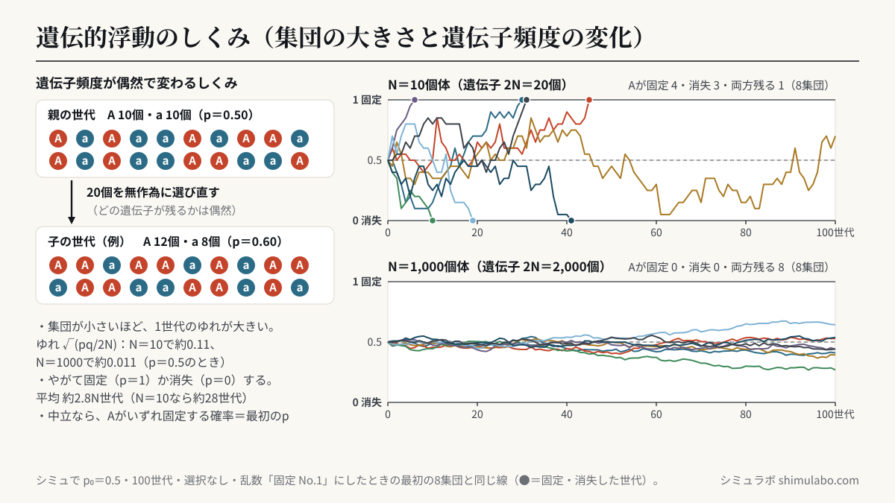
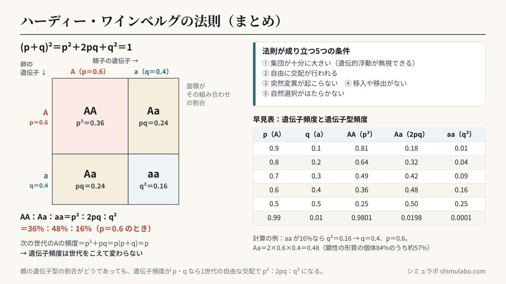

このシミュレーションでわかること
集団の遺伝子頻度は、自然選択がはたらかなくても、配偶子が次の世代に受けつがれるときの偶然によって変化します（遺伝的浮動）。集団が小さいほど1世代あたりの変化が大きく、ある対立遺伝子が固定（頻度1）したり消失（頻度0）したりするまでの世代が短くなります。一方、十分に大きな集団で自由な交配が行われ、突然変異・移入や移出・自然選択がなければ、遺伝子頻度も遺伝子型頻度 p²：2pq：q² も世代を重ねても変わりません（ハーディー・ワインベルグの法則）。
授業での使い方
導入：コインのモデル実験とつなぐ
班ごとに2色のコイン（各10枚＝N＝10個体分の遺伝子20個）でモデル実験を数世代行い、結果をグラフにします。次にこのシミュレーターを N＝10 にして「▶ 実行」を押し、同じ操作を100世代分くり返すと、班ごとにちがう結果になり、やがてどちらかの色に固定されることを確かめます。
展開：集団の大きさを変えて仮説を確かめる
「集団が大きいと、遺伝子頻度の変化はどうなるか」と仮説を立てさせ、N＝10・100・1000 で比べます。「乱数」を「固定 No.1」にすると、同じ条件では何度押しても同じ結果になるので、電子黒板とタブレットで同じグラフを見ながら話し合えます。「びん首効果」をありにすると、途中の5世代だけ個体数が減ったときに遺伝子頻度が大きくずれ、その後も戻らないようすが見られます。「選択の強さ」を0.05などにすると、Aの頻度が全体として上がる（自然選択）一方で、小さい集団では有利なAでも偶然消失することがあるとわかります。
まとめ：ハーディー・ワインベルグの法則
「モード」を「ハーディー・ワインベルグ」にし、「親の世代」を「AAとaaだけ」にして「▶ 次の世代をつくる」を押します。ヘテロ接合体のいない親の集団からでも、1世代の自由な交配で子の遺伝子型頻度が p²：2pq：q² になり、その後は世代を重ねても変わらないことを確かめます。集団を小さくすると、理論の値からずれやすくなることも確認します。
生徒への問いの例
- 選択がはたらいていない（s＝0）のに、Aの頻度が1や0になる集団があるのはなぜだろう？
- N＝10 と N＝1000 では、固定や消失が起こるまでの世代数はどうちがうだろう？絶滅危惧種のような小さな集団にとって、これは何を意味するだろう？
- ある集団で潜性の形質を示す個体が16％いた。顕性の形質を示す個体のうち、ヘテロ接合体（Aa）は何％だろう？
しくみ・解説






図はタップすると大きく表示されます。授業のプリント・スライド・板書計画に自由に使えます（出典「シミュラボ」とページのURLを添えてください）。
用語
- 遺伝子プールとは、ある集団の全個体がもつ遺伝子全体のことです。
- 遺伝子頻度とは、遺伝子プールの中で、ある遺伝子座の対立遺伝子全体のうち特定の対立遺伝子が占める割合のことです（Aの頻度 p、aの頻度 q、p＋q＝1）。
- 遺伝子型頻度とは、集団の中で AA・Aa・aa などの各遺伝子型をもつ個体が占める割合のことです。
- 遺伝的浮動とは、次の世代に受けつがれる配偶子が偶然によって決まることで、遺伝子頻度が世代ごとに不規則に変動する現象です。
- 固定とは、遺伝的浮動や自然選択の結果、集団の中である対立遺伝子の頻度が1（ほかの対立遺伝子が消失）になることです。
- びん首効果とは、集団の大きさが一時的に極端に小さくなることで、遺伝子頻度が大きく変わったり遺伝的多様性が失われたりする現象です。
- 自然選択とは、生存や繁殖に有利な形質をもつ個体がより多くの子を残すことで、その形質の遺伝子の頻度が高まることです。
- ハーディー・ワインベルグの法則とは、①集団が十分に大きい、②自由に交配が行われる、③突然変異が起こらない、④移入や移出がない、⑤自然選択がはたらかない、という条件のもとでは、遺伝子頻度が世代を経ても変化しないという法則です。
ハーディー・ワインベルグの法則の式
Aの頻度を p、aの頻度を q（p＋q＝1）とすると、配偶子の組み合わせ（下の表）から、次の世代の遺伝子型頻度は
(pA＋qa)² ＝ p² AA ＋ 2pq Aa ＋ q² aa
| 卵＼精子 | A（p） | a（q） |
|---|---|---|
| A（p） | AA（p²） | Aa（pq） |
| a（q） | Aa（pq） | aa（q²） |
次の世代のAの頻度は p²＋pq＝p(p＋q)＝p で、もとと変わりません。親の遺伝子型の割合がどうであっても、遺伝子頻度が p・q なら、1世代の自由な交配で遺伝子型頻度は p²：2pq：q² になります。
早見表：遺伝子頻度と遺伝子型頻度
| p（Aの頻度） | q（aの頻度） | AA（p²） | Aa（2pq） | aa（q²） |
|---|---|---|---|---|
| 0.9 | 0.1 | 0.81 | 0.18 | 0.01 |
| 0.8 | 0.2 | 0.64 | 0.32 | 0.04 |
| 0.7 | 0.3 | 0.49 | 0.42 | 0.09 |
| 0.6 | 0.4 | 0.36 | 0.48 | 0.16 |
| 0.5 | 0.5 | 0.25 | 0.50 | 0.25 |
| 0.99 | 0.01 | 0.9801 | 0.0198 | 0.0001 |
計算問題の例
- 潜性ホモ接合体の割合から q を求める：潜性の形質（aa）を示す個体が16％のとき、q²＝0.16 より q＝0.4、p＝1−0.4＝0.6。AA＝0.6²＝0.36（36％）、Aa＝2×0.6×0.4＝0.48（48％）。顕性の形質を示す個体（84％）のうち Aa は 0.48÷0.84＝約57％です。
- まれな潜性の形質：aa が1万人に1人（q²＝0.0001）のとき、q＝0.01、p＝0.99。ヘテロ接合体は 2pq＝2×0.99×0.01＝0.0198、約50人に1人です。形質として現れる人の約200倍の人が、潜性の遺伝子をもっていることになります。
- 個体数から遺伝子頻度を求める：1000個体の集団で AA 360、Aa 480、aa 160 のとき、Aの数は 2×360＋480＝1200（全体 2×1000＝2000）なので p＝0.6、q＝0.4。p²：2pq：q²＝0.36：0.48：0.16 となり、この集団はハーディー・ワインベルグ平衡にあるといえます。
遺伝的浮動の大きさの目安
このシミュレーターでは、N 個体の集団がもつ 2N 個の遺伝子を、親の世代の遺伝子プールから無作為に選び直して次の世代とします（ライト・フィッシャーのモデル）。1世代あたりの遺伝子頻度のゆれ（標準偏差）は √(pq／2N)、p＝0.5 から固定か消失が起こるまでの平均の世代数は約 4N×ln2 ≒ 2.8N 世代です。ヘテロ接合体の割合は、1世代ごとに平均して (1−1/2N) 倍に減っていきます。
| N（個体数） | 遺伝子の数 2N | 1世代のゆれ（p＝0.5） | 固定・消失までの平均（目安） | 50世代後のヘテロ接合体（最初を1） |
|---|---|---|---|---|
| 10 | 20 | 0.112 | 約28世代 | 0.08 |
| 20 | 40 | 0.079 | 約55世代 | 0.28 |
| 50 | 100 | 0.050 | 約140世代 | 0.61 |
| 100 | 200 | 0.035 | 約280世代 | 0.78 |
| 1000 | 2000 | 0.011 | 約2,800世代 | 0.98 |
中立な（有利でも不利でもない）対立遺伝子が最終的に固定する確率は、そのときの頻度 p と同じです。Aが有利なとき（このシミュレーターの「選択の強さ s」）の固定する確率の近似式は (1−e−4Nsp)／(1−e−4Ns) で、たとえば N＝20、s＝0.05、p＝0.1 では約34％です。有利な遺伝子でも、小さい集団では偶然に消失することがあります。木村資生が提唱した中立説では、分子レベルの変化の多くは自然選択に有利でも不利でもなく、遺伝的浮動によって集団に広まると考えます。
参考
- 文部科学省「高等学校学習指導要領（平成30年告示）解説 理科編 理数編」生物（1）生物の進化（2色のコインを使った遺伝子頻度のモデル実験）
- 文部科学省「高等学校学習指導要領（平成30年告示）解説」
- 日本遺伝学会『遺伝単（遺伝学用語集 対訳付き）』（2017年。顕性・潜性への言いかえ）
- G. H. Hardy（1908）Mendelian proportions in a mixed population. Science 28: 49–50 ／ W. Weinberg（1908）
- 木村資生『生物進化を考える』岩波新書（1988年）
- 高等学校「生物」の教科書「進化の仕組み」
引用・転載について
本ページのシミュレーション結果・数値は、出典を明記いただければブログ・ニュース記事・SNS・授業や社内資料への引用を歓迎します。事前連絡は不要です。
出典：シミュラボ「遺伝的浮動とハーディー・ワインベルグの法則のシミュレーター」 https://shimulabo.com/sims/iden-fudou/よくある質問
- 遺伝的浮動と自然選択のちがいは？
- 自然選択は、生存や繁殖に有利な遺伝子の頻度が高まるという方向性のある変化です。遺伝的浮動は、どの配偶子が次の世代に残るかが偶然で決まることによる方向性のない変化で、有利・不利と関係なく起こります。集団が小さいほど遺伝的浮動の影響が大きくなります。
- ハーディー・ワインベルグの法則が成り立つ条件は？
- ①集団が十分に大きい（遺伝的浮動が無視できる）、②自由に交配が行われる、③突然変異が起こらない、④ほかの集団との間で移入や移出がない、⑤自然選択がはたらかない、の5つです。この条件では遺伝子頻度が世代を経ても変化せず、遺伝子型頻度は p²：2pq：q² に保たれます。
- 潜性ホモ接合体の割合から遺伝子頻度を求めるには？
- 潜性の形質を示す個体（aa）の割合が q² なので、その平方根が q です。たとえば aa が16％なら q＝√0.16＝0.4、p＝1−q＝0.6 で、ヘテロ接合体は 2pq＝0.48（48％）です。
- なぜ小さい集団ほど遺伝子頻度が固定・消失しやすいの？
- 次の世代に受けつがれる遺伝子の数（2N個）が少ないと、偶然のかたよりが割合として大きくなるからです。1世代のゆれの大きさは √(pq／2N) で、p＝0.5 のとき N＝10 では約0.11、N＝1000 では約0.011 です。固定か消失までの平均の世代数はおよそ 2.8N 世代です。
- びん首効果とは？
- 病気や災害などで集団の大きさが一時的に極端に小さくなると、そのとき生き残った少数の個体の遺伝子頻度が偶然に大きくかたより、その後に集団が大きくなっても遺伝的多様性が失われたままになる現象です。チーターやキタゾウアザラシの遺伝的多様性が低いのは、その例と考えられています。
- 「優性・劣性」と「顕性・潜性」は同じ意味？
- 同じ意味です。「優性・劣性」は形質が優れている・劣っているという誤解を生みやすいため、日本遺伝学会が2017年に「顕性・潜性」への言いかえを提案し、今の高校の教科書でも「顕性・潜性」が使われています。